前言
注：这篇文章，最早发表在CSDN博客上https://blog.csdn.net/Manistein/article/details/8994607 后来CSDN博客弃用了，于是迁移到这里，以下是正文
大学这几年一直在学图形学方面的知识，积累了一些原理的知识，也作过一些总结，并用word文档的方式记录下来，因为懒，不想写到博客上，前几天由于自己的手提出了问题，大量的笔记大量遗失，还好台式上还储存着，现在发现记录在网络上是最安全的，还可以和别人讨论学习，下面是我以前做的一些总结，现在把它放在一起，供大家参考，如果有什么错误的地方，希望大家批评指正，菜鸟在此先谢过各位大神。
学过图形学的人都知道，图形的变换是通过矩阵来实现的，不过这些矩阵是怎么推导过来的呢，下面我们来讨论一下：
缩放矩阵推导
要对整张纹理进行变换操作，需要对图元中的每一个顶点进行处理，比如我们需要对纹理进行缩放操作，假设上三角形由v0，v1，v2组成，下三角形由v0，v2，v3组成，那么我们要对此图元进行缩放处理，就先要得到一个缩放矩阵，缩放矩阵如下图所示：
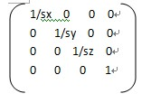图1
如果我们要将原来的图元放大两倍，那么这个矩阵就是：
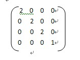图2
这里我要对矩阵的变换操作，进行一些较为详细的讨论，为什么这个矩阵是缩放矩阵，顶点与它相乘，会发生什么样的变化？这里我们假设顶点为v[vx,vy,vz,vt]，其中，vx，vy和vz为顶点在x轴，y轴和z轴上的坐标，而vt则是一个十分特别的变量，如果vt为0，那么v为向量，如果vt为1，那么v为点，为什么会有这样的定义呢？这绝对不是无中生有，我们都知道，平移向量是没有意义的，向量只是表示方位，而顶点则是表示一个具体的点，以缩放矩阵为例，我们分别把v的vt标识为1，将v’的vt标识为0，现在我们分别将v和v’与该缩放矩阵平移S相乘，并且查看结果，假设S矩阵如下所示：
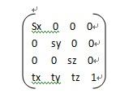图3
V为[vx,vy,vz,1]，将v与S相乘得：
Sv=[vx * Sx + tx, vy * sy + ty, vz * sz + tz, 1]，从最终的顶点，我们可以知道，当vt为1时，顶点不仅实现了缩放，而且还实现了平移，下面我们来看v’与sv相乘的结果：
假设v’为[vx,vy,vz,0]，那么v’与S相乘的结果为：
Sv’=[ vx * Sx, vy * sy, vz * sz, 0];与上面的结果对比，我们可以很轻易地发现，v’并没有实现平移，他只是实现了缩放而已，这个与平移向量没有意义的思想是一脉相承的，所以我们规定当向量的第四维的值为0时，其为向量，为1时，其为顶点。如果vt的值不为1，而是任意值w，那么要进行坐标操作时，想要将该向量标准化，即将v’=[vx,vy,vz,w]转化为v’[vx/w, vy/w, vz/w, 1];
在下面的演示过程当中，为了使读者更易理解，所以所有的顶点都只标出x轴和y轴坐标。
假设我们的v0={-1,1，0}，v1={1,1,0}， v2={1，-1,0}，v3={-1，-1,0}，在缩放时，由于上三角形和下三角形有两个顶点是重合的，所以我们可以把这个整个图元看做是矩形，一般情况下，我们把变换中心设置为图元的中心位置，如下图所示：
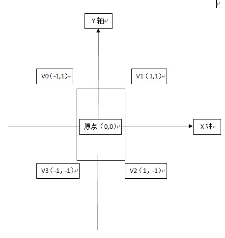图4
正如上图所示，矩形的中间位置在坐标轴的正中间，v0~v3与这个缩放矩阵相乘后，得到的点为v0（-2,2），v1（2,2），v2（2，-2），v3（-2，-2）；缩放后，如下图所示：
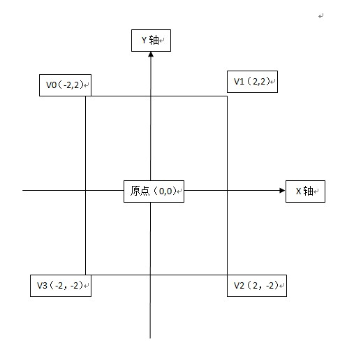图5
以上显示的所有内容，都是在图元的局部坐标系中进行，在2D处理当中，要显示最终的纹理，我们需要将局部坐标系转化为屏幕坐标系，什么是屏幕坐标系，就是我们窗体的Client区域，如下图所示：
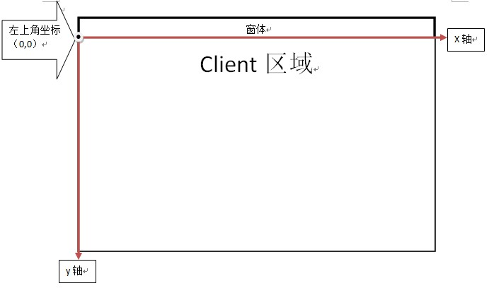图6
要将局部坐标系转换为屏幕坐标系，我们只需要进行平移操作即可，比如，我们所进行操作的图元的在屏幕上的坐标为（100,100），那么，此时我们只需要将纹理的4个顶点，分别向右平移100个像素，再向下平移100个像素，如下图所示：
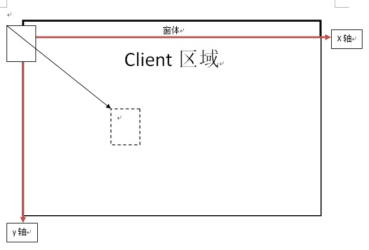图7
现在一切都很清楚了，其实所谓的缩放，其实就是在原点将所有的图元顶点，乘以同一个缩放矩阵，然后再将所有的顶点平移像素坐标中的位置。
二、旋转矩阵推导
1、绕特殊轴旋转（如x、y、z轴，这里只讨论z轴的情况，其他情况原理一致）
同理，旋转矩阵也一样的原理，下面我们来看一下旋转矩阵的构造：
 图8
图8
上图所示的矩阵是绕z轴顺时针旋转t度的矩阵，以上图元只需要将所有的顶点乘以这个矩阵，即可实现旋转。
这个矩阵是怎么来的呢？现在我们来推导一下，其实绕x，y或z轴旋转的矩阵很容易推导，比绕任意轴旋转的矩阵要容易得多，绕任意轴矩阵推导，我已经将那个推导的方法上传到“独立游戏开发者联盟”qq群里了，有兴趣的可以去下载，群号分别是185017593。
言归正传，现在我们来推导这个矩阵，首先假设存在向量v[vx,vy, 0, 0];现在我们要让v绕z轴顺时针旋转θ度，如下图所示：
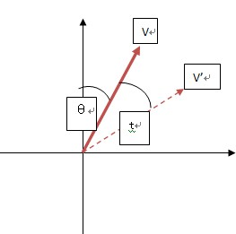图9
要实现v向v’绕z轴顺时针旋转t度，直接去计算是十分有困难的，这里我们将借助三角函数来实现，首先我们设|v|=r,那么通过三角函数，我们可以得到下面的关系
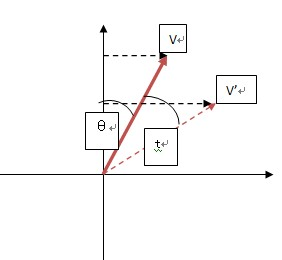图10
Sinθ = vx / r;
cosθ = vy / r;
因为θ和t都是已知的角度，现在我们可以通过sin(θ+t)和cos(θ+t)来间接求解，因为vx’= sin(θ+t)，vy’ = cos(θ+t)；
sin(θ+t) = sinθ*cost + sint*cosθ;
cos(θ+t) = cosθ*cost – sinθ*sint;
容易得到：
Vx’/ r = vx / r *cost + vy / r *sint;
Vy’/ r = vy / r *cost – vx / r * sint;
根据矩阵的计算方法，我们可以逆推得到矩阵M：
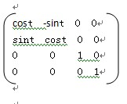图11
现在我们将v[vx, vy,0, 0]向量与矩阵M相乘，验证结果，结果为：
V’[vx * cost + vy *sint, vy * cost – vx * sint, 0, 0],结果完全正确。下面我们来演示图元旋转的一些步骤，这里我只给出图形说明，不给出详细的文字说明：
步骤一：建立图元的局部坐标系：
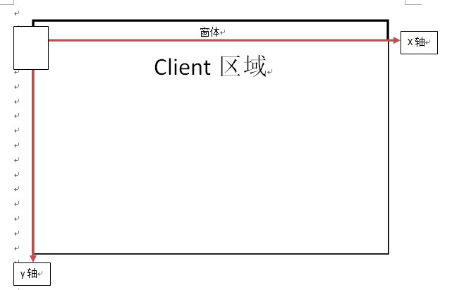图12
步骤二：将每一个顶点与旋转矩阵相乘，实现旋转：
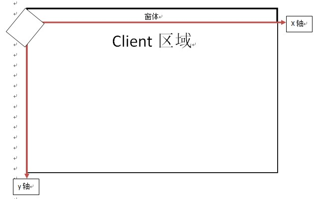图13
步骤三：平移到其该去的地方：
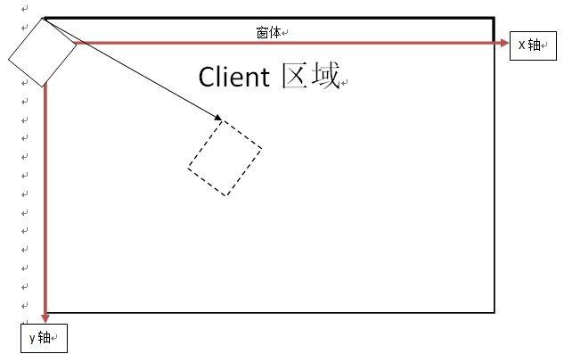图14
现在我们已经完成了缩放和旋转的变换原理，还有一定就是平移，其实平移是那么多变换里最简单的一种，只需要对顶点的x，y或z坐标加上要移动的值就可以实现平移，这里不再赘述.
2、绕任意轴旋转：
关于绕任意轴旋转的内容，网络上有很多类似的文章，我也看了一些，不过由于叙述方式非常简略，所以我当时也是真心没看懂，直到遇到了《3D数学基础：图形与游戏开发》这本书，再结合自己所学的数学知识，现在基本上能够弄明白这个推导过程。现在我们来推导这个过程：
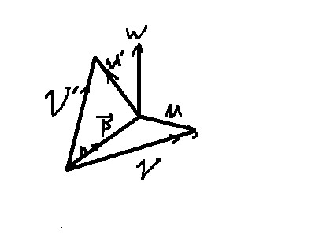图15
假设向量V绕任意轴N旋转θ度，为了简化操作，这里直接在与向量N垂直的二维平面上进行讨论，如上图所示，我们将V设置为要旋转的向量，P为V在N方向上的投影，V，U为与N垂直的向量，且P+U=V，W为N×U，且|W|=|U|;（这里的N为单位向量），现在我们来讨论投影截面：
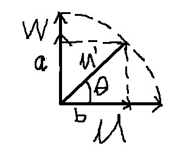图16
由于U’由U逆时针旋转θ所得，所以|W|=|U|=|U’|,设U’在W处的投影投影向量为a，在U上的投影向量为b，则有： cosθ=|b|/|U’| sinθ=|a|/|U’|
等价于： |b|=|U’|*cosθ; |a|=|U’|*sinθ
因为|W|=|U|=|U’|，且a与W同向，b与U同向；则有： |a|=|W|*sinθ |b|=|U|*cosθ
又有：U’=a+b;则 U’=Sinθ*W+cosθ*U; (1)
现在，是要将（1）式转化为只有V和N的式子，
U=V-P；
因为P为V在N上的投影，现在我们来推导一下投影的公式；
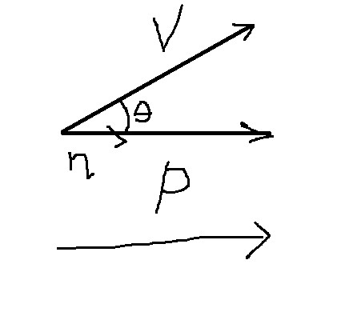图17
如上图，P为V在N向量上的投影，设θ为V与N向量的夹角， cosθ=|P|/|V| |P|=cosθ|V|
P=N(|P|/|N|); 又P=cosθ|V| 则有： P=N(cosθ|V|)/|N|=N(cosθ|V||N|)/|N|^2=N*(V.N)/|N|;
这里的N为单位向量，所以式子可以简化为：P=N(V.N);
U=V-P; U=V-N(V.N); W=N×U=N×(V-P)=N×V-N×P=N×V-0=N×V; （2）
现在回来看（1）式，则有： U’=Sinθ*W+cosθ*U;
将（2）式代入（1）得： V’=P+U=N(V.N)+sinθ(N×V)+cosθ(V-N(V.N)) =cosθ(V-N(V.N))+sinθ(N×V)+N(V.N); （3）
现在把它矩阵化： 设单位矩阵I为： 1 0 0 0 1 0 0 0 1 令Px=[1 0 0]; Py=[0 1 0]; Pz=[0 0 1]; 则I= |Px| |Py| |Pz|
将Px代入（3）式得：
（Px-Px(Px.N)）cosθ+sinθ(N×Px)+N(Px.N)，经过计算得到如下式子；
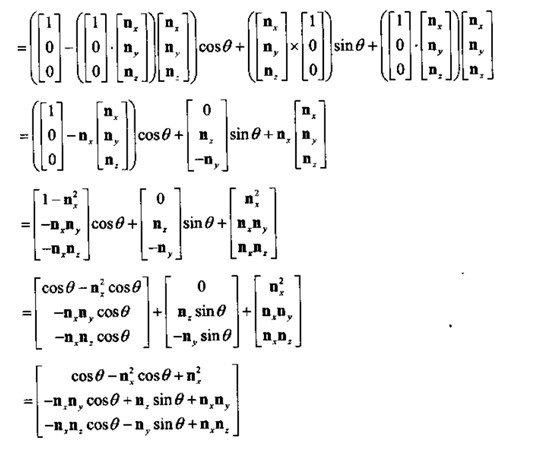图18
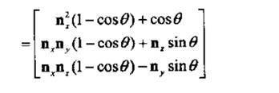图19
依次类推，将Py和Pz分别代入（3）得：
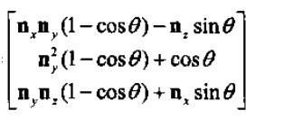图20
和
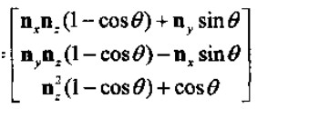图21
最终结果为：
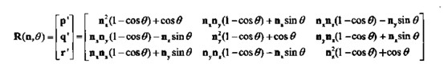图22